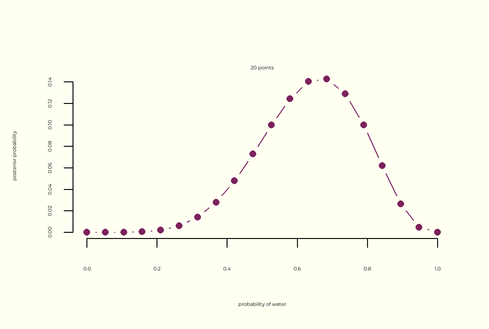
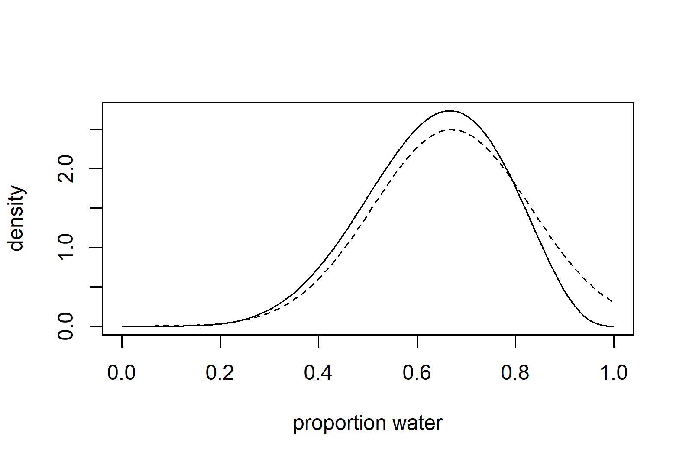

Chapter 1
Of Models and Monsters
The Golem of Prague - Jewish mythical creature that is awakened and commanded by truth but lacks wisdom. Its lack of discernment renders him dangerous and vulnerable to the work of evil agents.
Statistical models are like golems, set up and commanded by truth to obey without complaints but unable to discern context and usefulness.
A clear and urgent need for a unified theory of statistics that allows for flexibility and freedom in designing, building and refining special-purpose statistical procedures. Classic statistics tests are rigid and applicable to only a handful of procedures; but even those tests that offer more flexibility, like ordinary linear regression relies on strong assumptions that lead to catastrophic results if violated.
The Monster of Deductive Falsification (DF)
- DF is impossible in nearly every scientific context:
- NHST is not falsificationist since it doesn’t falsify the research hypothesis, but the null of no effect.
- Hypothesis are not models. One hypothesis may be represented by many different models, and nay given statistical model may correspond to more than one hypothesis.
- Possible solution: Compare more than one model. All statistical tests are also models.
The Weapons of the Fight
- Bayesian data analysis
- count the number of ways things can happen, according to your assumptions.
- Randomness is a property of information, not the world.
- Multilevel models
- The Earth stands on the back of an elephant, which stands on the back of a turtle. Where does the turtle stand? “It’s turtles all the way down”…for us it’s parameters all the way down.
- Multilevel regression deserves to be the default form of regression
- To adjust estimates for repeat sampling
- To adjust estimates for imbalance in sampling
- To study variation
- To avoid averaging
- Model comparison using uniform criteria
- Model comparison based on future predictive accuracy
Where to Go from Here?
- Chapter 2 and 3 - foundation Bayesian inference tools
- Chapter 4 - 7 - build multiple linear regression as Bayesian tools.
-
Chapter 8 - 11 - generalized linear models:
- Markov Chain Monte Carlo (MCMC)
- Maximum Entropy
- Model details
- Chapter 12 - 14 - Multilevel models, linear and generalized, missing data, measurement error, and spatial correlation.
- Chapter 15 - returns to some of the issues raised in Chapter 1.
Chapter 2 - Small Worlds and Large Worlds
Christopher Colombo miscalculated the diameter of the earth– he thought it was smaller (30,000 km instead of 40,000), landed in the Bahamas and discover a new world.
- The model is the small world, and we hope to deploy it in the large world of reality and be useful.
- Bayesian models are optimal in small worlds, but need to be demonstrated rather than logically deduced in large worlds.
The garden of forking data
- Consider everything that could have happened.
- Count the possibilities
- Use prior information
- from previous data
- knowledge of how the process works
- Act as if you had prior information
- multiply the prior count by the new count
- When we have previous information suggesting there are \(W_{prior}\) ways for a conjecture to produce a previous observation \(D_{prior}\) and,
- We acquire new observations \(D_{new}\) then the same conjecture can produce in \(W_{new}\) ways
- the number of ways the conjecture can account for \(D_{prior}\) and \(D_{new}\) is the product of \(W_{prior} \times W_{new}\).
- from count to probability \[
\begin{split}
\text{Plausibility of} X \text{ after observing } x \\
\propto \text{ ways } X \text{ can produce } x \\
\times \text{ prior plausibility of } X
\end{split}
\]
- standardize the probabilities (divide by the sum of products)
A few things to define:
- the parameter is the conjectured proportion of blue marbles.
- the likelihood is the relative number of ways that a p value can produce the data
- the prior probability is the prior plausibility of any specific p values
- the posterior probability is the new, updated plausibility of any specific p
Building a model
Working with a toy model to get an idea of how Bayesian inference works
Suppose you have a globe representing our planet, the Earth. This version of the world is small enough to hold in your hands. You are curious how much of the surface is covered in water. You adopt the following strategy: You will toss the globe up in the air. When you catch it, you will record whether or not the surface under your right index finger is water or land. Then you toss the globe up in the air again and repeat the procedure
but first, there are assumptions that constitute the model:
- Data story: motivate the model by narrating how the data might arise
- How the data came to be
- Descriptive story
- Causal story _ Involves restating:
- the true proportion of the conjecture, p
- the probability of producing an alternative conjecture, \(1-p\)
- independence of conjectures
- How the data came to be
- Update: Educate your model by feeding it the data
- Begins with prior plausibilities
- Updates them in light of the data
- A model can be updated forward-in-time, backwards or all-at-once. It can mathematically divide out the observations to infer the previous plausibility curve.
- A bad prior leads to misleading results just like bad estimators in Fisherian inference lead to bad results.
- Evaluate: All statistical models require supervision, leading possibly to model revision.
- Real world data must be accurately described to the model.
- Models are never true to reality so there’s no point in checking the truth of the model.
- You either fail or succeed at recognizing the falseness of the model.
- Check adequacy of the model, not its truth.
Likelihood: the probability of any possible observation, for any possible state of the small world.
\[ P(w|n,p) = \frac{n!}{w!(n - w)!}p^w(1-p)^{(n-w)} \]
Parameters: the adjustable inputs (\(n,p,w\))
Priors: for every parameter, there must be a prior probability and constrain the parameters to reasonable ranges.
Posteriors: unique set of estimates for every combination of data, likelihood, parameters and priors that takes the form of the probability of the parameters, conditional on the data \(P(p|n,w)\), defined by Bayes theorem
\[ P(w,p) = P(w|n,p)P(p) P(w,p) = P(p|w,n)P(w) \] Bayes’ theorem is just the posterior probability of p given w. The product of the likelihood and prior, divided by \(P(w)\), the average likelihood over the prior1. \[ P(p|w,n) = \frac{P(w|p)P(p)}{P(w)} \]
Making the model go
The core of the model, its motor, conditions the prior on the data, which can be done without forcing simple and rigid forms of prior that are easy to work with in three of many ways:
- Grid approximation
- continuous parameters
- only useful as a teaching tool
- Scales very poorly
- define the grid: how many points to use in estimating the posterior, then make a list of parameters in the grid.
- compute the value of the prior at each parameter value on the grid
- compute the unstandardized posterior at each parameter value
- standardize the posterior
# Define the grid
p_grid <- seq(0,1,length.out = 20)
# define the prior
prior <- rep(1,20)
# compute the likelihood @ each value on the grid
likelihood <- dbinom(6,9,prob = p_grid)
# compute product of likelihood and prior
unstd_posterior <- likelihood * prior
# standardize the posterior
posterior <- unstd_posterior/sum(unstd_posterior)
plot(p_grid,posterior, type = "b",
xlab = "probability of water",
ylab = "posterior probability")
mtext("20 points")
# You can try sparser (<20) or denser grids (>100). The correct density
# for your grid depends on how accurate you want your approximation to be.- Quadratic approximation
- Called quadratic approximation because the log of a normal distribution forms a parabola
- the posterior distribution can be approximated by a Gaussian, under general conditions
- We can make use of only two parameters, its center and spread
- Find the peak of the posterior (its center), then estimate the curvature near the peak
- compute quadratic approximation using this estimate
- as n increases, the quadratic approximation gets better
- equivalent to maximum likelihood estimate (MLE) and its standard error
library(rethinking)
globe_quad_approx <- map(
alist(
w ~ dbinom(9,p), # binomial likelihood
p ~ dunif(0,1) # uniform prior
),
data = list(w = 6)
)
# display summary of quad. approximation
precis(globe_quad_approx)
#> mean sd 5.5% 94.5%
#> p 0.667 0.157 0.416 0.918
# Compare the quad. approximation to the analytical solution
w <- 6
n <- 9
# exact posterior
curve(
dbeta(x,
w+1,
n - w+1),
0,1,
xlab = "proportion water",
ylab = "density")
# quad. approximation
curve(dnorm(x,0.67,0.16), lty = 2, add = TRUE,
xlab = "proportion water",
ylab = "density")
- MCMC
- models for which grid or quadratic approximation are always satisfactory.
- doesn’t compute or approximates the posterior but draws samples from the posterior.
- Results in a collection of parameters and its frequencies which correspond to the posterior plausibilities.
Footnotes
\(P(w) = E(P(w|p)) = \int P(w|p)P(p)\partial p\)↩︎